Vert Pizza Time
Couleur de structure : cadre, bandeau, fonds pleins.
- HEX
- RVB
- CMJN*
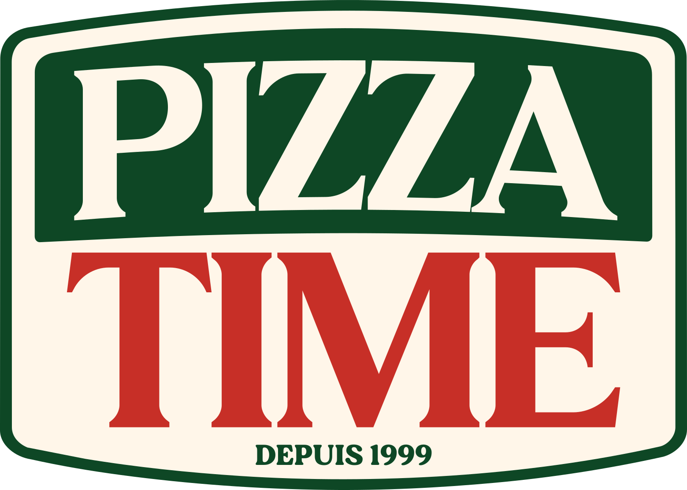
01Contexte & objectifs
Pizza Time fait évoluer son identité : un logo redessiné, plus affirmé, qui garde les repères de la marque et son histoire depuis 1999.
Convivialité
Une marque proche, que l’on reconnaît au premier coup d’œil.
Gourmandise
Des couleurs chaudes et un lettrage généreux.
Générosité
Un logo qui occupe son espace avec assurance.
Qualité
Un dessin précis et des règles d’usage claires.
02Avant / après
Faites glisser le curseur pour comparer les deux logos, présentés à hauteur égale.
Ancien logo — fichier PNG de 512 px fourni, présenté sans retouche.
Nouveau logo principal — fichier vectoriel.
Deux façades existantes, photographiées avant la refonte, et leur simulation avec la nouvelle identité, au même cadrage.
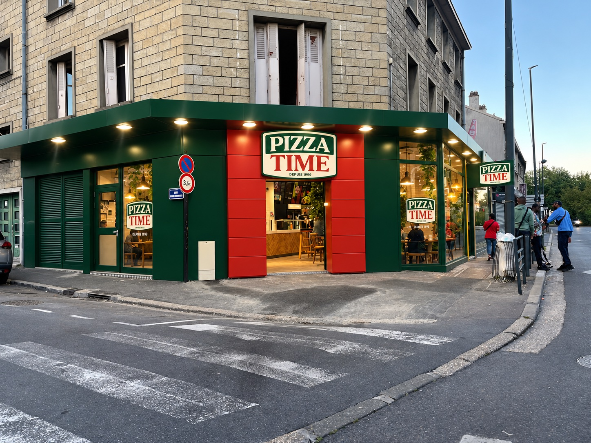
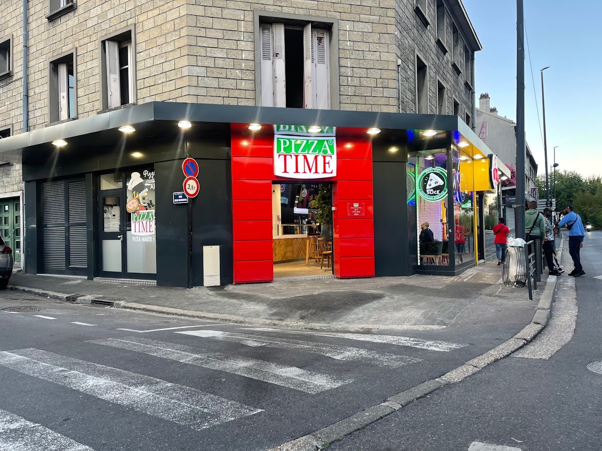
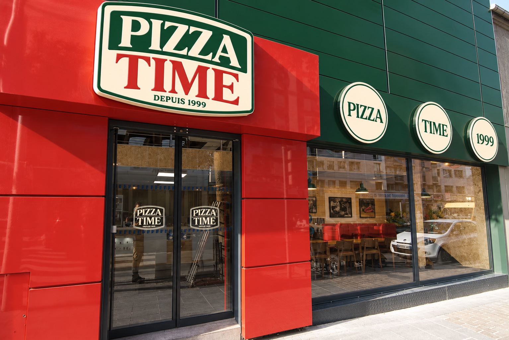
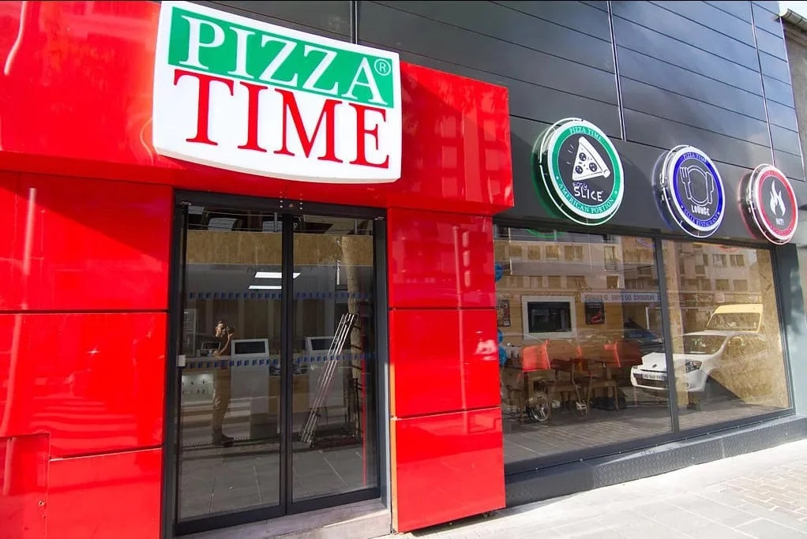
Visuels de simulation : le logo y est reproduit par l’image et peut différer légèrement du fichier vectoriel, qui seul fait foi. Les pastilles « PIZZA · TIME · 1999 », le pictogramme des boîtes vertes et les textes des boîtes rouges sont des éléments de mise en scène, hors système validé.
03Le logo principal
Utilisée pour l’enseigne, le packaging et les prises de parole principales.
Logo principal SVG — Logo principal PNG — Logo principal
04Continuité & évolutions
Constats établis à partir des deux fichiers.
05Déclinaisons
Le logo principal reste la version de référence. Les déclinaisons prennent le relais quand le format, la taille ou le fond l’exigent.
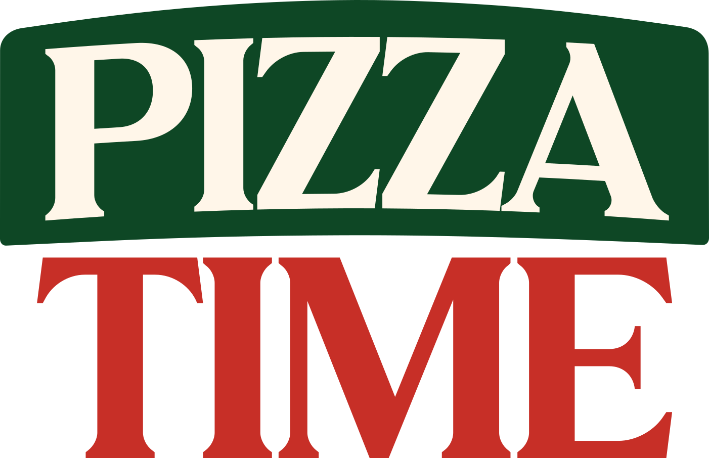
Version sans cadre
Le bandeau et le lettrage du logo principal, sans cartouche ni mention.
Usage Sur fond crème uniquement : menus, papeterie, supports déjà cadrés.
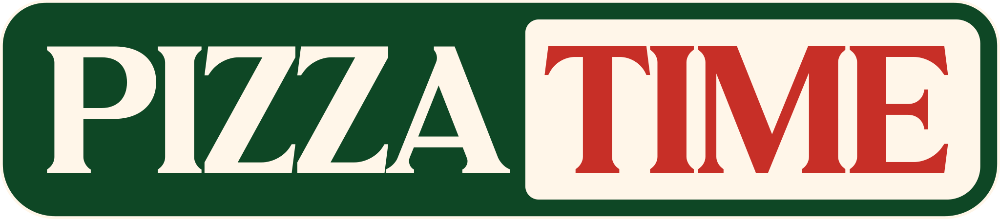
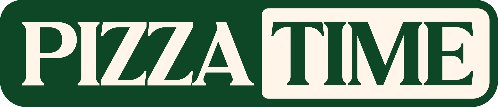
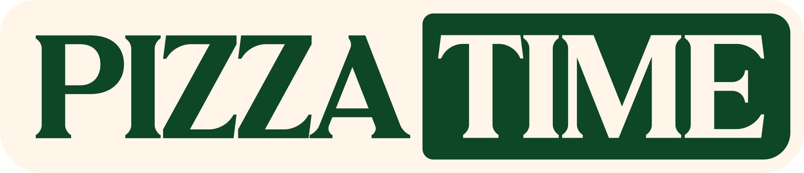
Signature linéaire
Lettrage sur une ligne et mention, monochrome crème.
Usage Sur fond vert ou rouge : signatures, vidéos, petits espaces en longueur.
Composants graphiques
Cadre, lettrages et mention, fournis séparément pour les graphistes. Ils servent à construire des supports ; ils ne remplacent pas les logos.
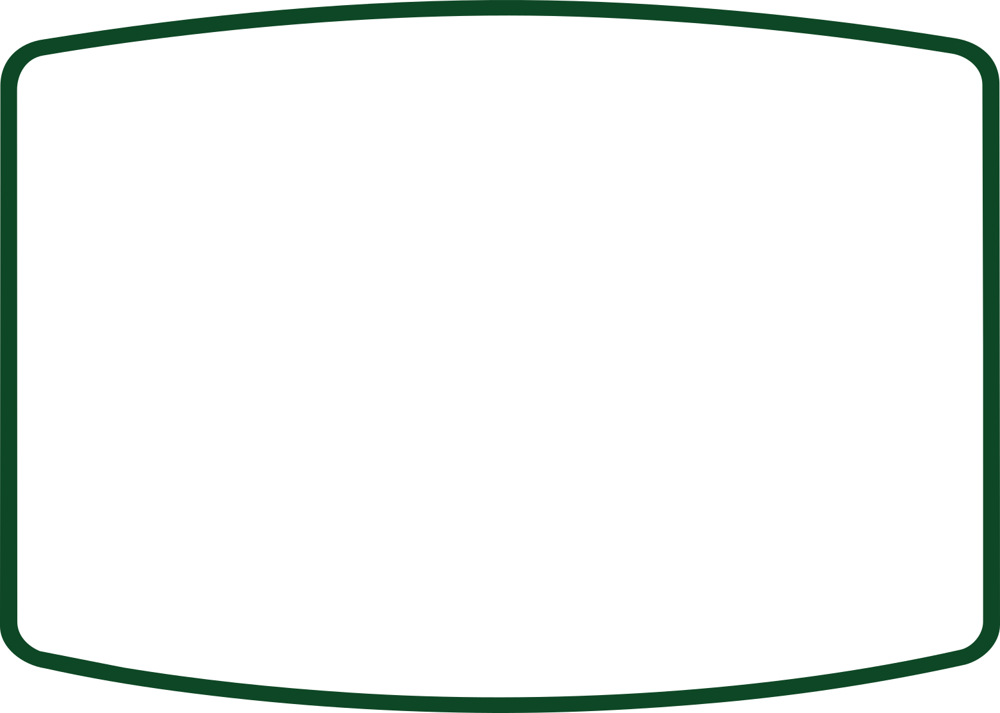
06Sur les fonds de la palette
Choisissez une version : les fonds recommandés et déconseillés s’affichent d’après les essais.
07Couleurs
Cliquez sur une valeur pour la copier.
Couleur de structure : cadre, bandeau, fonds pleins.
Couleur d’appel : « TIME », prix, promotions.
Couleur de fond : remplace le blanc pur de l’ancienne identité.
* CMJN indicatif — conversion depuis sRGB avec le profil Coated FOGRA39, intention colorimétrique relative. À confirmer par l’imprimeur selon le papier et le procédé (BAT). Aucune référence Pantone n’est définie à ce stade.
Associations
Contrastes mesurés selon la méthode WCAG 2.1.
Équilibre
Repère proposé, à valider : le crème domine, le vert structure, le rouge ponctue.
08Typographie
Les lettrages du logo sont dessinés : les polices servent aux textes qui l’accompagnent.
Titres
Capitales et bas-de-casse à fort contraste, empattements fins. Pour les titres et les noms de produits.
Promotions & accroches
L’italique apporte du mouvement : offres, temps forts, mots mis en avant.
Sous-titres, prix, textes
Empattements doux et chiffres robustes. Proche de la mention « Depuis 1999 » ; police de la palette de référence.
MADE Gentle, également fournie, n’est pas retenue : son dessin est très proche de MADE Dillan et n’apporterait pas de niveau supplémentaire à la hiérarchie.
AvigeaMargherita · 10,50 €
Avigea ItalicMargherita · 10,50 €
MADE DillanMargherita · 10,50 €
MADE Dillan · MADE Gentle Fichiers fournis en version « PERSONAL USE » (mention « Free for personal use ONLY »). Une licence commerciale MadeType est nécessaire avant toute diffusion publique : site en ligne, impression, enseigne.
Avigea Storytype Studio — « All rights reserved ». Le fichier ne précise pas la licence acquise : vérifier qu’elle couvre l’usage bureau, l’impression et l’intégration web.
09Règles d’utilisation
Document de présentation. Les règles signalées « à valider » restent des recommandations tant qu’elles n’ont pas été approuvées.
Espace de protection
Recommandation à valider
X = largeur du « I » de « TIME », empattements compris.
Aucun texte, bord de support ou autre élément ne pénètre dans une marge de 1 X autour du logo. La mesure suit la taille du logo : elle se vérifie sur le dessin lui-même.
Tailles minimales
À valider par un essai d’impression
Essais réalisés à l’écran (densité standard) : la mention « Depuis 1999 » devient lisible à partir de 180 px de large sur le logo principal.
| Version | Écran | Impression |
|---|---|---|
| Logo principalEn dessous, utiliser la version sans cadre ou une horizontale. | 180 px | 40 mm |
| Version sans cadreLettrage seul : reste lisible en petite taille. | 64 px | 15 mm |
| Horizontale — verteValable pour toutes les horizontales. | 100 px | 25 mm |
| Signature linéaireLimite fixée par la lisibilité de la mention. | 180 px | 40 mm |
Logo principal
Version sans cadre
Horizontale — verte
Signature linéaire
Affichage à taille réelle en pixels CSS. Les tailles barrées sont sous le minimum proposé.
À ne pas faire
Déformer
Faire pivoter
Changer les couleurs
Ajouter un effet
Rouge sur vert
Recomposer
Ne pas non plus redessiner le lettrage, remplacer la mention par une police, ou utiliser l’alternative non validée comme logo.
10Applications
Simulations de projection, à plat. Ce ne sont pas des fichiers de fabrication : formats, découpes et textes définitifs restent à établir.
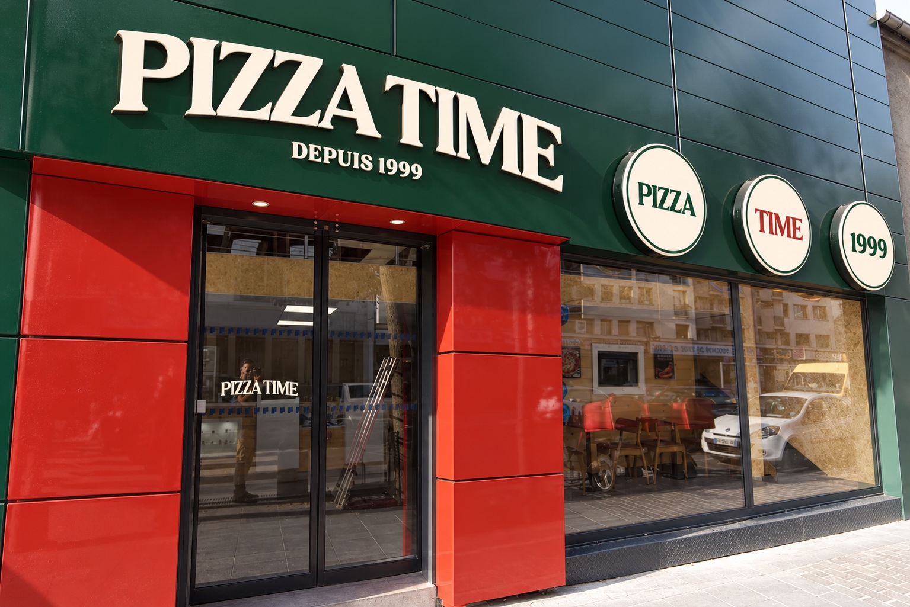
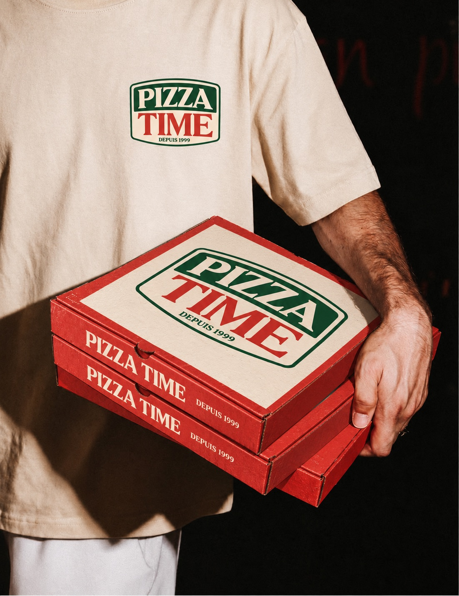
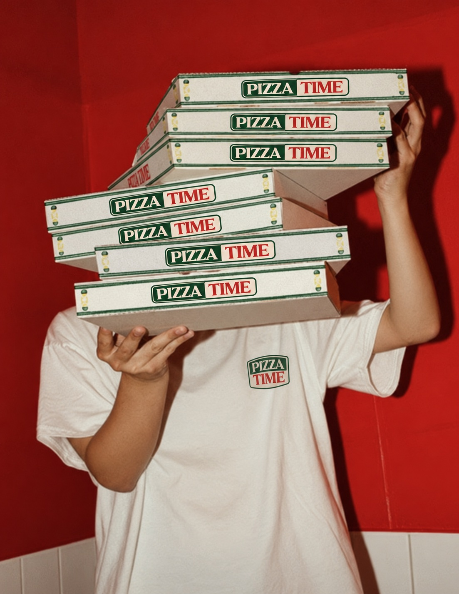
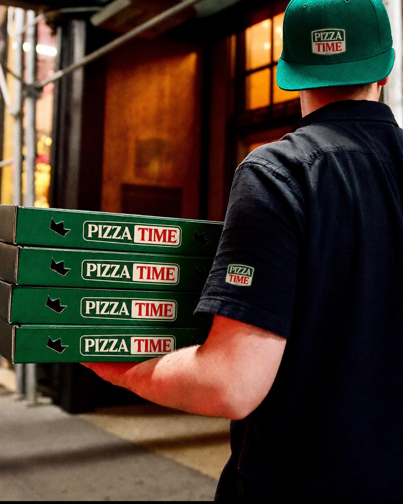
Visuels de simulation : le logo y est reproduit par l’image et peut différer légèrement du fichier vectoriel, qui seul fait foi. Les pastilles « PIZZA · TIME · 1999 », le pictogramme des boîtes vertes et les textes des boîtes rouges sont des éléments de mise en scène, hors système validé.
Bannières et story : photographie produit, motifs et logo principal.
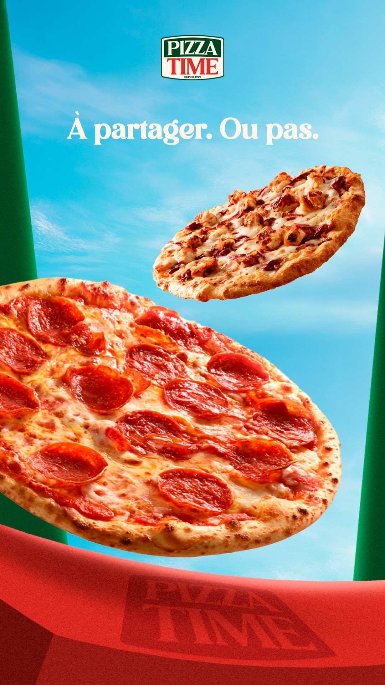
Les accroches figurant sur ces visuels sont des propositions : le compte rendu reportait les signatures publicitaires à une phase ultérieure.
Nouvelle identité
La carte
11Pictogrammes & motifs
Une famille de pictogrammes pour la carte et la signalétique, et des motifs qui reprennent le lettrage et le cartouche du logo.
Éléments complémentaires — à valider avec le client
Six pictogrammes au trait épais et aux angles arrondis, en trois coloris.
Usages Carte, menus, application, signalétique de comptoir.
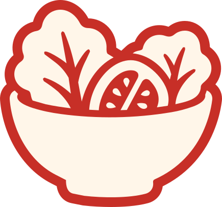
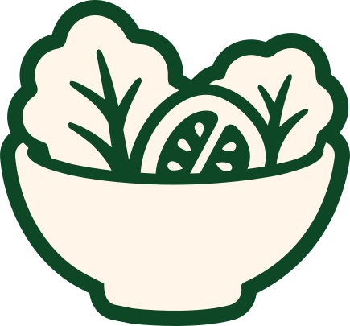
Salade
Boisson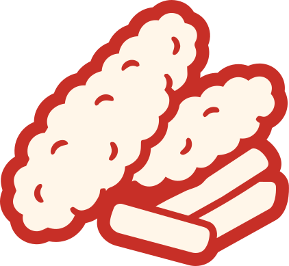
Tenders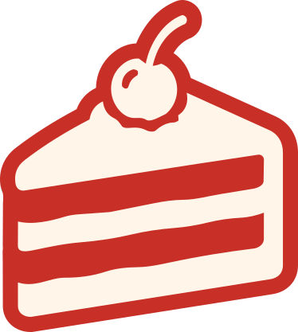
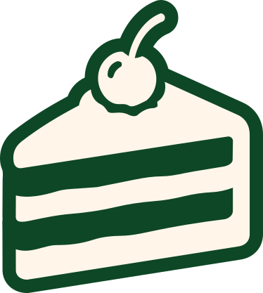
Dessert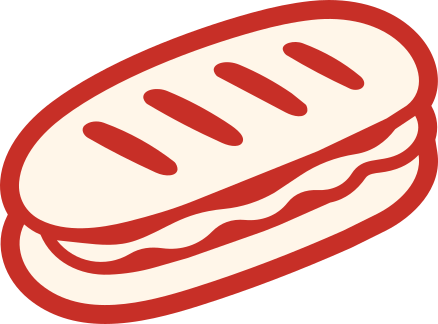
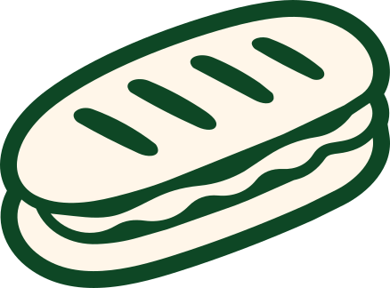
Sandwich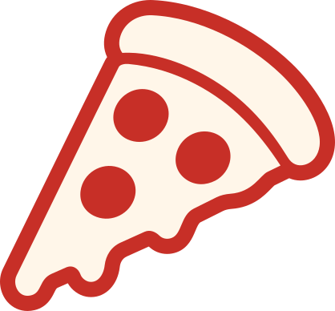
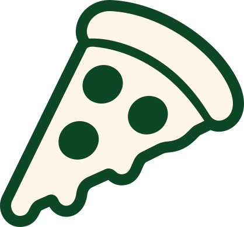
PizzaLettrage ton sur ton, cartouches, rayures et lettrage tricolore. Chaque motif existe aussi sans fond.
Usages Packaging, papier de comptoir, fonds de PLV et de réseaux sociaux.
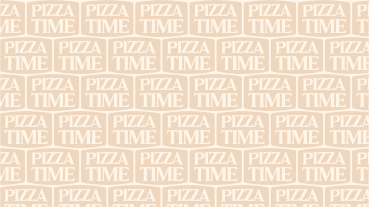
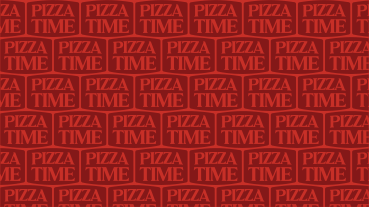
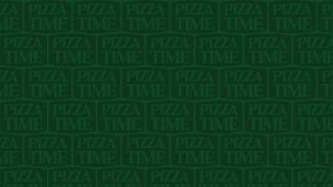
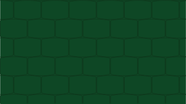
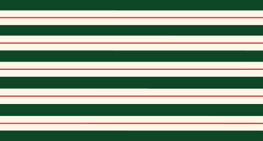
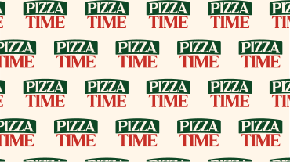
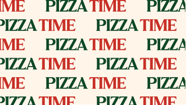
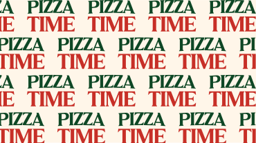
Les motifs ton sur ton utilisent des nuances propres à chaque fond (#EFD6BF, #841818, #7F1414, #0D351A, #EED7BF), en plus des trois couleurs de la palette. À valider comme teintes de motif.
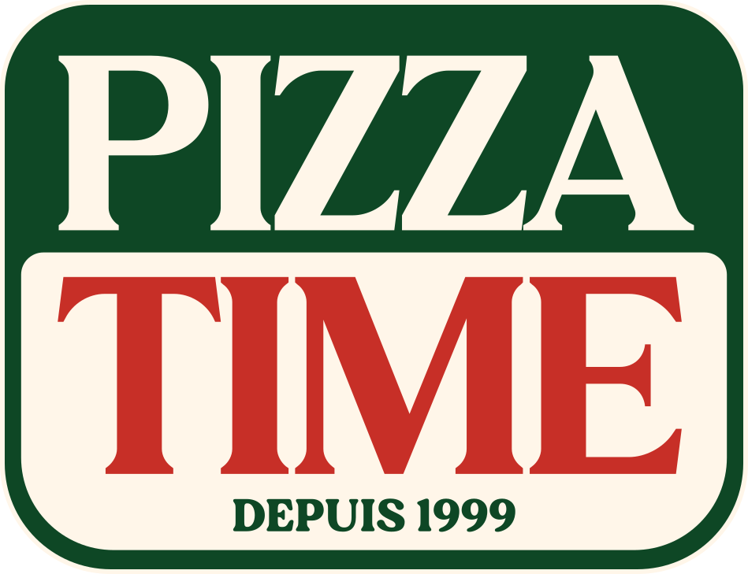
Alternative non validée
Le fichier 9 propose une autre silhouette — rectangle à coins arrondis. Il ne remplace pas le logo principal et n’est pas diffusé.
12Synthèse & ressources
Les polices ne sont pas distribuées ici : elles doivent être acquises sous licence par chaque utilisateur.